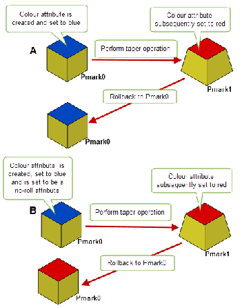

| |
Rollback |
| <<< Partitions | Chapters | Groups >>> |
Rollback is used to undo changes made after a certain point, indicated by a roll mark set at that point, either by the application or the user.
There are two types of rollback:
Partitioned rollback enables feature modeling applications to perform model update more efficiently after model parameters are changed. It is possible to roll back a model to the point where a feature was added, reapply the modified feature, and then reapply subsequent features to generate the updated model. Individual bodies or collections of bodies can be rolled back independently, so updating one model in a session does not affect other models. Branching rollback of bodies - several alternative updates to a given body - can also be implemented.
Applications still have the ability to roll the entire session back and forward - a session undo which can be invoked by the user.
The application is expected to manage the storage and purging of session and partition marks, according to its own priorities and disk management strategy. However, Parasolid does provide some assistance with mark management, such as the clean-up of pmarks done when the roll forward option is off.
Before using partitioned rollback you need to register a delta frustrum using PK_DELTA_register_callbacks. To stop partitioned rollback you must stop the Parasolid session. For more information about partitioned rollback, see Section 98.3.1, “Delta functions”.
For an example of this functionality, see the code example in the
C++\Code Examples\Application Support\Rollback
folder, located in
example_applications
in your Parasolid installation folder.
The following SESSION functions are provided to help manage rollback:
|
returns true if partitioned rollback was initialised by calling PK_DELTA_register_callbacks before calling PK_SESSION_start |
|
|
returns the most recent session mark, and whether the session is still at that mark (supersedes PK_MARK_ask_state) |
|
In order to roll partitions back and forth, marks are created in partitions. These are called partition marks, and the corresponding PK object is the PMARK. A partition mark can be thought of as recording a particular state of a partition.
At any time a partition has a current pmark. This is the pmark most recently created or rolled to. If the partition has not been modified (by creating, modifying, or deleting entities, or by a roll operation) since that pmark was made current, the partition is at that pmark.
Each partition has an initial pmark, and it cannot be deleted; it is the unique pmark in the partition with no preceding pmark. A newly created partition has only an initial pmark, which is current. However, the partition is not at its initial pmark, as that would represent an inactive state of the partition - a partition which is rolled back to its initial pmark is inactive, and can no longer be used.
The pmarks of a partition together form its pmark graph. Parasolid maintains the pmark graph of each partition, and the application can enquire on the sequence of pmarks contained in it:
Figure 98-1 The pmark graphs of two partitions
Figure 98-1 shows the pmark graphs of two partitions. The current pmark is shown in each case. In the case of Partition1:
At any time, both partitions can be rolled back or forward to any pmark, further modeling can be performed, or a new pmark can be created.
Use PK_PMARK_goto_2 to roll a partition back or forward to a specified pmark. As a result of the rolling operation, entities are created, modified and deleted. This section describes how you can control reporting of these entities and use them for tracking purposes.
PK_PMARK_goto_2 returns the number of affected entities as well as, by default, the entities themselves, using the following arrays:
You can control which of these arrays are returned, and what they contain, with the following options:
These options are described in more detail throughout the rest of this section.
You can also use PK_PMARK_ask_entities to perform “what-if” computations on partition information without actually changing the Parasolid session. This function tells you which entities would be created, modified, or deleted if you rolled to a specified pmark, from either the current state of the partition, or from a specified pmark.
|
Note: PK_PMARK_ask_entities is particularly useful in that it can tell you which entities would be deleted as a result of moving between any two partition states, without having to actually delete those entities. |
PK_PMARK_ask_entities receives and returns the same information as PK_PMARK_goto_2, and takes a very similar set of options.
Note: With the exception of
del_attrib_cb
,
del_context
, and
del_attdefs
, these options are also available for PK_PARTITION_make_pmark_2. In addition, with the exception of
del_attrib_cb
,
del_context
,
del_attdefs
, and
want_attrib_mod
, these options are also available for PK_PMARK_ask_entities. |
The bulletin board must be emptied before PK_PMARK_goto_2 is called, if it is switched on. The bulletin board logs operations that occur on entities in different partitions, and a partition roll could invalidate its contents (for example, if a body is used in a logged operation, its partition is rolled back to before the body's creation).
To make a partition inactive, it must be rolled to its initial pmark. This cannot be done to the current partition.
Warning: The entity arrays returned (optionally) by PK_PMARK_goto_2 relate to the internal Parasolid model, not that seen by your application. Although the contents of the
del_entities
and
new_entities
arrays are guaranteed, the contents of the
mod_entities
array cannot be, and it is not recommended that you rely on this list as a means of tracking from your application. |
The
mod_entities
array may sometimes contain entities that do not seem to have been changed, and may not contain entities that do seem to have changed, as far as your application is concerned. In addition, the contents of
mod_entities
may vary between different versions of Parasolid.
Some examples of how
mod_entities
might contain entries that are not relevant to your application are:
You can request that any of the arrays of entities be suppressed in the output by setting the appropriate
want_
xxx
_entities
option to PK_LOGICAL_false. For example, to omit the return of modified entities (but allow the return of created and deleted entities), set
want_mod_entities
to PK_LOGICAL_false. By default, each of the
want_
xxx
_entities
fields is PK_LOGICAL_true.
For modified entities, you can improve performance by requesting that only entities having undergone modeling changes should be returned in the
mod_entities
array. A
modeling change is a bulletin-board event where some specified modification has been made to an entity; this does not include creation, deletion and copying. For a list of all possible modeling changes, see Section 100.2.1, “Bulletin board events”.
You limit the
mod_entities
array (and improve performance) in this way by setting the
want_logged_mod
field of the options structure to PK_LOGICAL_true. The default is PK_LOGICAL_false, which specifies that any modified entity should be reported in the
mod_entities
array (assuming that
want_mod_entities
is set to PK_LOGICAL_true).
Note: If
want_logged_mod
is PK_LOGICAL_true and an entity was modified in more than one pmark during a roll operation, it will be reported if any individual modification was a modeling change. |
You can use the
new_entities_classes
,
del_entities_classes
, and
mod_entities_classes
options to control which classes of entity are returned in the three respective return arrays.
These arrays can contain PK_CLASS_entity and any of its subclasses, except PK_CLASS_attdef. If you specify a superclass and any of its subclasses (e.g. PK_CLASS_curve and PK_CLASS_ellipse) then an error is raised.
|
|
Although the
mod_entities
return array can include entities that do not appear to have changed, this is not the case for attributes. Changes to attributes, are
always included in
mod_entities
, and you can control the types of attribute modifications that are reported using the following option:
When entities are deleted as a result of rolling to a specified pmark, any attributes attached to those entities are deleted as well. You can use the
del_attrib_cb
option to specify a callback that is called just before an attribute is deleted. You could use this, for example, to free memory in your application that is pointed to by the contents of an attribute. The callback below shows a very simple example of how this could be done:
void my_callback ( PK_ATTRIB_t attrib,PK_ATTDEF_t attdef, PK_POINTER_t context ) { PK_POINTER_t my_memory = NULL; if ( PK_ATTRIB_ask_nth_pointer( attrib, 0, 0, my_memory )== PK_ERROR_no_errors ) { PK_MEMORY_free( my_memory ); } } |
The following options can be used with
del_attrib_cb
to provide additional flexibility:
In the example above,
del_attdefs
should contain the appropriate attribute definition that you want to trigger the callback. This avoids having to check the attribute definition in the callback code itself, thereby saving calls to the callback.
Warning: Avoid using PK_ATTRIB_ask_owner in any
del_attrib_cb
definition. Because Parasolid does not guarantee whether an attribute or its owner is deleted first when rolling to a pmark, it is possible that an attribute’s owner has already been deleted when the
del_attrib_cb
callback is called. |
PK_PMARK_delete is used to delete partition marks. More than one pmark can be deleted with a single call. However, the following pmarks cannot be deleted:
The current pmark can be deleted, provided that any pmarks that follow it are also deleted successfully.
PK_PMARK_delete returns the pmarks that could not be deleted for these reasons.
Deleting a pmark may result in extra disk space being (temporarily) required, if the Frustrum data for a partition mark is written out again to merge the changes (deltas) on either side of the pmark. For example, in Figure 98-1, if pmark 5 in partition 1 were deleted, n5 and n6 would be merged, keeping the pmark graph connected.
PK_PARTITION_advance_pmark resets the current pmark so that it represents the current state of the given partition; this overwrites the previous state of the partition stored by the pmark. This function is more efficient than setting a new pmark and immediately deleting the previously current one in two steps, as it reduces delta frustrum access (that results in memory transfers or disk usage).
The following pmarks cannot be advanced:
|
Note: These functions should only be called when partitioned rollback has been started by calling PK_DELTA_register_callbacks. |
The following is a summary of all functions that relate to pmarks.
The following functions are also relevant to partition marks:
A no-roll attribute is one where its field values are always the latest values specified in the current session even after rolling back or forward to a pmark at which the attribute existed with a different field value.
|
Note: Attributes can only be made no-roll attributes if partitioned rollback is active (see PK_DELTA_register_callbacks). |
Attributes can be set as no-roll attributes using PK_ATTRIB_set_no_roll. Before you set an attribute to be a no-roll attribute, you must do the following:
Figure 98-2 illustrates the effect of setting an attribute to be a no-roll attribute. In both of the examples shown in the image, a user-defined colour attribute is created for one face of a body and its value is initially set to blue.
In (A), a taper operation is performed on the body and the value of the attribute is changed to red. The attribute is not set to be a no-roll attribute; therefore when we rollback the value of the attribute reverts to the value it was at pmark0 (i.e. the colour of the face returns to blue).
In (B), the same taper operation is performed on the body and the value of the attribute is changed to red. In this case, the attribute is set to be a no-roll attribute; therefore when we rollback the value of the attribute does not change and instead retains the latest value specified in the session (i.e the colour of the face remains red).
Figure 98-2 The effects of setting an attribute to be a no-roll attribute
You can set an attribute to be a no-roll attribute at any point in the current session. Once an attribute is set as a no-roll attribute, it retains its no-roll property until the end of the current session. Its field values will always be the latest values specified in the session, even if you rollback to a pmark that was created before the attribute was set as a no-roll attribute, or roll forwards as illustrated in Figure 98-3.
|
Note: The no-roll property of these attributes is not transmitted between sessions. |
Figure 98-3 Rolling a no-roll attribute backward and forward
If you rollback to a pmark that was created when the attribute was not a no-roll attribute and the length of the field of the attribute is different at this pmark, then that field of the attribute will revert to the field values at that pmark. This can occur if the length of the field was changed prior to the attribute being set as a no-roll attribute. You can request a report of the changes due to the rollback using the
no_roll_diff
option in either PK_PMARK_goto_2 or PK_MARK_goto_2. By setting this option to PK_ATTRIB_no_roll_diff_report_c, a PK_REPORT_1_no_roll_diff_c report indicating the field values that have changed as a result of the rollback is returned. Subsequently rolling forward again will restore the no-roll value.
You can use PK_ATTRIB_ask_no_roll to find out if an attribute is a no-roll attribute. This function takes an array of attributes and checks each one for the no-roll property.
There are circumstances, particularly involving legacy deltas, where the no-roll property of an attribute and its fields may differ. In these cases, you can use the
check_consistency
option to request that such differences are reported. By default, this option is set to PK_LOGICAL_false. See the
PK Interface Programming Reference Manual for more information.
The partition rolling mechanism works by storing DELTAs (changes) between pmarks. These are byte-streams (e.g. files) which record the entities which need to be created, modified or deleted in order to move from one pmark to an adjacent one. These deltas are written out through the Frustrum interface, stored by the application Frustrum, and read back in during a roll operation.
If a new pmark is created, and the partition is currently at a pmark, a zero-length delta is written to the Frustrum.
For an example of this functionality, see the code example in the
C++\Code Examples\Application
Support\Partition
and
Delta
Transmission
folder, located in
example_applications
in your Parasolid installation folder.
This function must be called before the Parasolid session is started, if partitioned rollback is to be used during a session. It registers the rollback Frustrum functions which the partitioned rollback system uses to read and write delta files.
See Appendix C, “PK_DELTA Functions” in the Parasolid Downward Interfaces manual.
Session rollback provides the ability to change the state of the whole session at once. It coordinates the partitions in a session by setting simultaneous pmarks in each one.
Session marks record stages in the state of the entire session, and the session can be returned to any of these marks. The PK object representing a session mark is the MARK. After the session is rolled back or forward to a session mark, the entities in the session are exactly as they were when the session mark was created (except for attribute definitions and certain session parameters which are not affected by rolling back):
PK_MARK_create generates a session mark. The session mark notes the state of all partitions in the session, by creating new partition marks in all partitions which are not already at a pmark. It also notes the state of the bulletin board and session and modeling parameters, which are not in any partition.
Session marks form a linear sequence, not a branching tree. When a session mark is created, any session marks following the previously current one are first deleted.
PK_MARK_goto_2 returns the session (i.e. all the partitions, the bulletin board, modeling parameters and some session parameters - but not attribute definitions) to its state when the given session mark was created. The current partition is set to the partition which was current when the mark was created.
If the session roll forward option is off, then when a session mark is rolled to, all session marks following it are deleted, along with all pmarks which were created after it was created.
The bulletin board and modeling parameters are rolled back by session rollback, but are unaffected by partitioned rollback. The bulletin board does not need to be empty before a session rollback operation (as it does for a partition roll operation), as it is updated by session rollback.
The following session parameters are not affected by session rollback:
All other session parameters are rolled back by a session roll operation. None are changed by partitioned rollback.
Attribute definitions are not affected - once created, they always exist during a modeling session.
PK_MARK_delete deletes a session mark. Earlier and later session marks (if any) are still accessible.
Pmarks which were created as a result of this mark being set are not deleted. These might eventually be deleted by the application as part of its mark management strategy (see “Mark management - an example strategy”, at the end of this chapter, for a suggested method).
If the session is rolled back to a mark which was created before a particular partition was created, the fate of the partition depends on the setting of the roll forward session parameter:
roll_forward
is true, then the partition still exists, and is at its initial pmark (i.e. it is inactive - it cannot be made current, has no entities in it, and none can be created). Partition roll operations on it are still allowed.
roll_forward
is false, then the partition (with all its pmarks) is deleted.Note that the current partition may not be the same after session rollback, as the value of the current partition rolls with the session.
|
returns the session to its state when the given session mark was set |
|
|
returns the pmarks which would be current if the given mark were rolled to - one for each partition in the session |
The following functions are also relevant to session marks:
|
returns the most recent session mark, and whether the session is still at that mark |
If the application is going to use partitioned rollback, the registered Frustrum must conform to a new interface, as follows:
A delta holds the changes required to get from one pmark to an adjacent one. Deltas are unidirectional, i.e. they hold only enough information to get from pmark A to pmark B, not back again. When Parasolid executes a roll operation from one pmark to an adjacent one, it creates a new reversed delta to generate the reverse route. If there is insufficient disk space to do this, the roll operation does not take place.
Similarly, if a pmark is deleted, two deltas need to be merged into one. In this case the merged delta is written out first, before deleting the original deltas.
The pmark passed to the
open_for_write
function may sometimes be PK_PMARK_null (i.e. 0), in which case the delta does not correspond to a pmark visible to the application. The application should store this delta as usual, but need not (and cannot) delete it. These pmarks are generated by internal kernel processing, and is deleted by Parasolid when no longer required.
These rollback functions must be provided as part of the application Frustrum.
|
Note: The function names used below are purely nominal, as the actual names are passed to PK_DELTA_register_callbacks. |
|
opens (creates) a delta file for output, associated with the given pmark |
|
|
writes (appends) n_bytes bytes from the given array to the given delta |
|
See also Appendix C, “PK_DELTA Functions” in the Parasolid Downward Interfaces manual.
In the following sections, ‘disk space’ refers to wherever the application’s Frustrum stores the deltas.
A session roll operation may involve writing to disk, and may require more memory, and so it is possible for the operation to fail. However, the following can be guaranteed:
The application is expected to delete partition marks and session marks as required to conserve disk space when the marks are no longer required:
If memory is exhausted or the Frustrum returns a write error during a call to PK_PARTITION_make_pmark_2 or PK_MARK_create, the session is unchanged (apart possibly from some new pmarks having been created), so the application can free some disk and retry the call.
If memory is exhausted or the Frustrum returns a write error during a call to PK_PMARK_goto_2 or PK_MARK_goto_2, then the session may have changed in that some partitions may have been rolled some or all the way to their destination pmarks. However, the application can free some disk space and try the operation again, because the session is in a known state (all partitions are at some pmark), even though it is not necessarily either the starting or the desired destination state. Note that, in the case of PK_PMARK_goto_2, the application should first return to the original pmark before retrying the roll operation, otherwise the returned arrays of new, modified and deleted entities are not as expected.
If the Frustrum returns a read error after successfully opening a delta file, this may in some circumstances result in a fatal error so that the Parasolid session cannot be continued.
If a run-time error occurs during a roll operation, this results in the usual failure code being returned to the PK. As with any other run-time error, the application is expected to roll back to the current session mark to recover the session to a valid state. However, a run-time error during a call to PK_MARK_goto_2 or PK_PMARK_goto_2 may result in a fatal error return.
If a roll operation (including PK_MARK_goto_2) is interrupted as a result of a call to KABORT with code user-interrupt, the usual failure code is returned to the PK, and the application should roll back to the current session mark to recover, as usual.
The following is an example of how mark management might be performed by a feature modeling application, using pmarks to record feature attachment and session marks for user-level undo.
The application makes the following assumptions for its algorithm:
Hence when a session mark is deleted, any pmarks which are not on the main line and which do not have future pmarks which are used by some session mark, can be deleted. This applies whether the session mark is explicitly deleted, or deleted as a result of a session rollback with roll-forward option off.
The remaining question is which pmarks or session marks to delete when disk becomes full or nearly full:
| <<< Partitions | Chapters | Groups >>> |